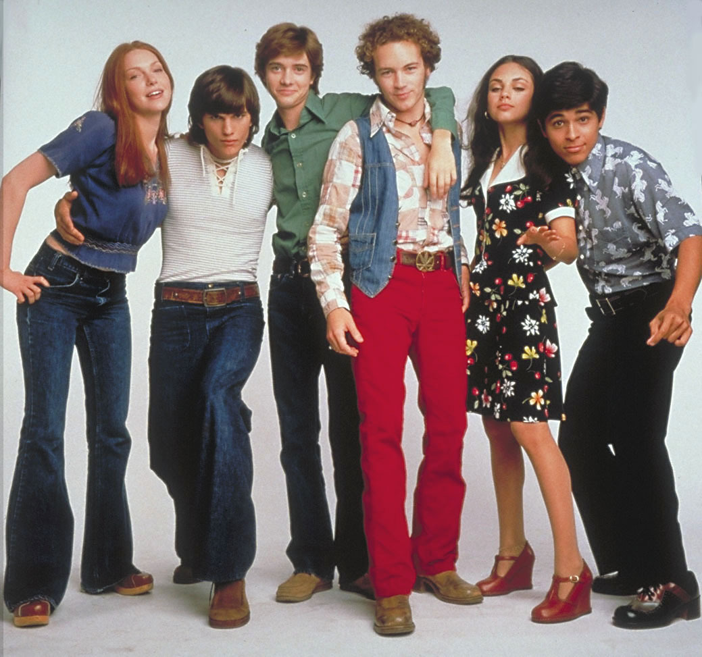

The Zeitgeist of the 70s
The Style of the 70s
The fashion in the 1970s was quite unique for its time. It consisted of clothing such as bell bottom pants, frayed jeans, midi skirts, corduroy, platform shoes, and feathered hair to name a few. There was an array of fashion choices to choose from. Not only did you have these unique fashion pieces but the style in the 70s required lots of bold colors and all kinds of different patterns. Your fashion icons consisted of celebrities like Joni Mitchell, Farrah Fawcett, Mick Jagger, and David Bowie.
The Big Thing in the 70s

One of the big things in the 70s turned out to be Roller Derby. It started to really thrive in Northern California in the 60s and 70s. Some of the most famous roller derby player were Bonnie Thunders and Lady Trample. In the early 70s a record was madee for event attendees in the Oakland Coliseum bringing in over 28 thousand fans for the Bay Area Bombers against the North East Braves.
The Sound of the 70s
Music was a big part of the 70s, there was a big variety of different genres and sound that came out of this decade. To give an idea some of the songs in the top 30 were "Wonderful Tonight", "YMCA", "Hotel California", "Sweet Home Alabama", and "Piano Man". Some of the top artists were Stevie Wonder, Elton John, The Eagles, Pink Floyd, and Queen. The 70s was an influential decade in music due to all of the different sounds, the technology advances, as well as the artists that came out of this time. The development of music is constant and all of the genres draw from each other creating categories from glam rock all the way to grunge. Music is ever evolving and the 70s was a very influential moment for music.
The Shows of the 70s
The entertainment in the 70s was a lot of well written sitcoms like Laverne & Shirley, Happy Days, and The Bob Newhart Show. Some of the movies that defined the 70s cinema were movies such as The Godfather, Star Wars, One Flew Over The Cuckoo's Nest, and Jaws. The 70s had some of the most popular entertainers, tv shows, and movies just beginning. The highest grossing picture of the 70s was, of course, The Godfather, it grossed a total of $134,821,952.The 70s really was a truly exciting time in television as well as film.